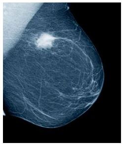
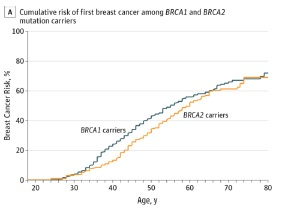
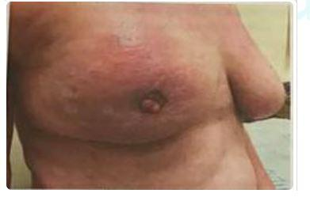
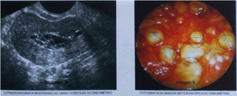
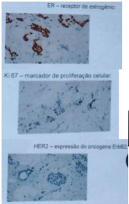

Questão 1 · Exames complementares · Quadro clínico · 4000184324Mulher, 56a, comparece à Unidade Básica de Saúde com queixa de aparecimento de nódulo mamário à direita, indolor, há dois meses. Exame físico: mamas simétricas, sem abaulamentos ou retrações; alteração de textura da pele com hiperemia e edema em quadrante superior direito (QSD) de mama direita (D). Palpa-se nódulo endurecido e mal delimitado de 2cm em QSD de mama D, axila D com linfonodo palpável de 1cm endurecido e fossas supraclaviculares livres. INDICAR:
A Mamografia, para rastreamento.
B Ultrassonografia de mamas, para avalição de axilas e fossas supraclaviculares.
C Ressonância magnética de mamas, para avaliação de axilas e pele.
D Mamografia, para orientação do diagnóstico.
Questão 2 · Carcinoma Inf lamatório · 4000183459Paciente 35 anos procura o serviço de ginecologia, por apresentar, inicialmente na mama esquerda, alteração da cor da pele, evoluindo de um rosado claro que em duas semanas passou a ser um rash vermelho associado a edema (casca de laranja). A alteração se espalhou rapidamente por toda a mama e agora criou umas endurações difusas. Informa também que a mama dobrou de tamanho. Diante do achado, qual o provável diagnóstico?
A Carcinoma ductal in situ
B Carcinoma lobular
C Tumor phyllodes
D Carcinoma inflamatório
E Fibroadenoma
Questão 3 · Quadro clínico · 4000182953Mulher de 55 anos notou nodulação em mama direita há 2 meses. Exame físico: nódulo endurecido de difícil delimitação com o tecido adjacente de 3 cm no quadrante superolateral da mama direita. Assinale a alternativa correta.
A Deve-se solicitar mamografia e aguardar o resultado para definir a conduta.
B Deve-se indicar biópsia do nódulo, de preferência guiada por ultrassonografia.
C O exame de ressonância das mamas é o mais indicado.
D O exame clínico é característico de cisto mamário.
Questão 4 · Fatores de risco · Ginecologia · Fatores de risco · 4000181508Com relação ao câncer de mama e do ovários hereditários, analise as alternativas abaixo. I - Podem estar associados a outros tumores, como câncer de pâncreas e câncer de próstata em homens jovens. II - Mulheres aos 70 anos com mutações deletérias no BRCA1 apresentam risco de 90% câncer de mama, 80% de risco de câncer de ovário e 70% de risco de desenvolverem câncer de mama contralateral. III - Mulheres portadoras de mutações deletérias no gene BRCA2 apresentam aos 70 anos risco de 55% de câncer de mama, 16,5% de câncer de ovário e 62% de câncer de mama contralateral. Sobre esta situação selecione a opção correta.
A As afirmativas I e II são verdadeiras. A afirmativa III é falsa.
B As afirmativas I e III são verdadeiras. A afirmativa II é falsa.
C As afirmativas II e III são verdadeiras. A afirmativa I é falsa.
D As afirmativas I, II e III são verdadeiras.
E As afirmativas I, II e III são falsas.
Questão 5 · Câncer de mama · 4000171003Mulher de 35 anos fez estudo genético que detectou mutação no gene BRCA-1. Com isso, ela deve ser orientada em relação ao aumento de risco para câncer de:
A mama e ovário
B intestino e ovário
C mama e endométrio
D intestino e endométrio
Questão 6 · Prognóstico · 4000170616Após passar por todas as etapas de investigação, uma mulher foi diagnosticada com câncer de mama. Ela foi submetida à cirurgia para a remoção do tumor, mas teme sua recidiva. Com base nesse caso hipotético, assinale a alternativa que apresenta aspecto indicador de alto risco de recidiva.
A tumor com baixo grau histológico, ou seja, diferenciado
B alta expressão de receptores hormonais
C tamanho do tumor entre 1 e 2 cm
D nível de Ki-67 elevado
E ausência de invasão vascular, dificultando o acesso do quimioterápico à lesão
Questão 7 · Câncer de mama · 4000170032Mulher de 44 anos apresentou em mamogra a de rastreamento imagem nodular irregular de 1,5 cm na mama esquerda (BIRADS 5). DUM há 15 dias. Biópsia percutânea: carcinoma invasivo sem outras especi cações, grau histológico 3 (imuno-histoquímica: receptor de estrogênio 60%, receptor de progesterona 30%, HER2 escore 0, Ki-67 30%). Estadiamento T1N0. Assinale a alternativa correta.
A Exames de imagem com achados BIRADS 5 apresentam risco de malignidade entre 50 e 95%.
B Para essa paciente, o tratamento adjuvante com tamoxifeno é mais adequado do que inibidores da aromatase.
C Por ser um tumor luminal B, a paciente tem indicação do uso de trastuzumabe.
D Caso essa paciente seja submetida à cirurgia conservadora, a margem ideal é de 1 cm para que não precise de radioterapia adjuvante.
Questão 8 · Fatores de risco · 4000169963Quando uma mulher consulta seu ginecologista, alguns dados da anamnese podem ser identi cados como indicativos de maior risco para câncer de mama.Assinale a alternativa que apresenta a condição que mais tem relação com essa doença.
A Nuliparidade.
B Uso de contraceptivo oral.
C Menarca precoce.
D Menarca tardia.
E Amamentação prolongada.
Questão 9 · Câncer de mama · 4000169082A transmissão genética do câncer de mama por mutação do BRCA1 é considerada
A recessiva ligada ao X.
B autossômica dominante com baixa penetrância.
C autossômica dominante com elevada penetrância.
D autossômica recessiva.
E autossômica dominante ligada ao X.
Questão 10 · Fatores de risco · 4000168284São fatores de risco para o desenvolvimento do câncer de mama:
A idade tardia da menarca e obesidade.
B mutação BRCA1 e menopausa precoce (≤ 45 anos).
C presença de fibroadenoma na mama e multiparidade.
D nuliparidade e consumo regular de álcool.
Questão 11 · Tratamento adjuvante · Tratamento neoadjuvante · Tratamento cirúrgico · 4000167552Mulher, 58 anos, com mamas volumosas, pendulares, e com tumoração de quatro centímetros em quadrante superolateral da mama esquerda, acompanhada de retração de complexo aréolo-papilar, axila esquerda com gânglio semi xo e endurecido de um centímetro. Realizou biópsia por agulha grossa com diagnóstico de carcinoma não especial, tipo ductal, subtipo molecular triplo negativo. Qual seria o melhor tratamento para esta paciente:
A mastectomia radical + quimioterapia adjuvante.
B mastectomia radical + quimioterapia adjuvante + hormonioterapia.
C quimioterapia neoadjuvante + mastectomia radical + hormonioterapia.
D quimioterapia neoadjuvante + quadrantectomia e linfadenectomia axilar + radioterapia.
E hormonioterapia + quadrantectomia e linfadectomia axilar.
Questão 13 · Câncer de mama · 4000166407O carcinoma de mama é a segunda neoplasia maligna mais frequente na mulher, superado apenas pelo câncer de pele não melanoma. No Brasil, aproximadamente 66 mil mulheres são acometidas por câncer de mama anualmente, com taxa de mortalidade ao redor de 20%. Sobre o câncer de mama sabe-se que:
A para que ocorra o câncer, é necessário um erro genético, que pode ser herdado, através de mutações germinativas, que são as mais frequentes, 99% dos casos, ou adquirido ao longo da vida, em decorrência de mutações somáticas, que são raras, 1%.
B dentre os fatores de risco, pode-se citar menarca tardia, menopausa precoce, multiparidade, gestação precoce e mamas predominantemente adiposas.
C dentre as manifestações clínicas, geralmente é observado nódulo indolor, fixo, endurecido e aderido aos planos profundos.
D o autoexame e a ultrassonografia são fortemente recomendados para prevenção primária e secundária
Questão 14 · Câncer de mama · 4000165628Mulher, 60 anos, passa em consulta de rotina anual. Hipertensa em uso de anlodipino e diabetes controlado com metformina. Ao exame clínico das mamas observa-se linfonodos endurecidos, coalescidos, pouco móveis em palpação da axila direita e supraclavicular direita. A mamogra a é apresentada. A principal hipótese diagnóstica é confirmada. Qual é a conduta adequada?

A Mastectomia radical.
B Quimioterapia primária.
C Radioterapia primária.
D Quadrantectomia com pesquisa de linfonodo sentinela.
Questão 15 · Exames complementares · 4000165125São achados frequentes nos esfregaços citopatológicos resultantes de punção mamária do carcinoma ductal in situ de alto grau (tipo comedo), as seguintes afirmativas. Sobre esta situação selecione a opção correta. I - Calcificações distróficas. II - Células pequenas soltas. III - Células epiteliais ductais plemórficas.
A As afirmativas I e II são verdadeiras. A afirmativa III é falsa.
B As afirmativas I e III são verdadeiras. A afirmativa II é falsa.
C As afirmativas II e III são verdadeiras. A afirmativa I é falsa.
D As afirmativas I, II e III são verdadeiras.
E As afirmativas I, II e III são falsas.
Questão 16 · Histologia · 4000165111Assinale a lesão que pode ter maior semelhança clínica e de imagem com tumor benigno de mama.
A Carcinoma tubular.
B Carcinoma medular.
C Carcinoma mucinoso.
D Carcinoma metaplásico.
E Carcinoma papilar invasivo.
Questão 17 · Rastreamento do câncer de mama · Câncer de mama · 4000164436Em mamogra a diagnóstica, mulher de 66 anos apresenta linfoadenopatia (LAP) regional unilateral. A paciente relata aplicação de vacina Pfizer-BioNTech contra Covid-19 na semana anterior. Neste caso,
A não há estudos mostrando correlação entre vacinação contra Covid-19 e aparecimento de LAP.
B a LAP tem pouco valor diagnóstico no câncer de mama e, portanto, está associada à vacinação contra Covid-19.
C a LAP pode ser relacionada à vacina, se for ipsilateral à aplicação, mas deve-se seguir investigação de caso suspeito de câncer de mama.
D a LAP está, frequentemente associada sempre ao câncer de mama e é necessário realizar biópsia para esclarecimento diagnóstico.
Questão 18 · Exames complementares · Nódulo mamário · 4000164424Mulher de 42 anos de idade refere nódulo de mama esquerda de 2 centímetros há 3 meses. Foi à UBS e o médico tentou fazer uma punção e não veio líquido. A conduta indicada a seguir, dentre as abaixo, é
A indicar mamotomia para retirada do nódulo.
B realizar ultrassonografia de mamas.
C realizar mamografia bilateral.
D indicar quadrantectomia e radioterapia.
Questão 19 · Carcinoma Inf lamatório · 4000163472Reconhecer os quadros clínicos e realizar o diagnóstico diferencial entre mastite aguda e carcinoma inflamatório pode ser confuso e erroneamente levar ao atraso no tratamento de neoplasia mamária. Sobre o diagnóstico e tratamento do carcinoma inflamatório, é correto afirmar:
A Após ajustes dos fatores de risco, o carcinoma inflamatório tem a mesma sobrevida que o carcinoma de mama em sua apresentação clássica.
B A biópsia do linfonodo sentinela não deve ser realizada.
C Mesmo na presença de receptores hormonais positivos, a hormonioterapia adjuvante está contraindicada.
D O diagnóstico de carcinoma inflamatório é clínico, dispensando a confirmação histopatológica.
E No TNM da AJCC 8.ª edição, o carcinoma inflamatório é classificado com “T2d”.
Questão 20 · Tratamento adjuvante · Hormonioterapia · Histologia · 4000151626Paciente de 65 anos, submetida à setorectomia de mama com técnicas oncoplásticas devido carcinoma ductal in situ, grau nuclear 1, micropapilar, com margens livres e receptores hormonais positivos. Qual seria a sua conduta baseando-se nos estudos clínicos randomizados?
A Tamoxifeno.
B Radioterapia exclusiva.
C Radioterapia e inibidor de aromatase.
D Quimioterapia adjuvante seguida de hormonioterapia por 5 anos.
Questão 21 · Exames complementares · Rastreamento mamográf ico · Quadro clínico · 4000146936Paciente de 52 anos, menopausada, relata nódulo em mama esquerda de crescimento rápido. Sobre a investigação diagnóstica deste caso, é CORRETO afirmar:
A O auto exame das mamas é o método de rastreamento mais eficaz para o diagnóstico de câncer de mama.
B A mamografia de rastreamento é o método mais indicado para o diagnóstico de câncer de mama.
C A mamografia com laudo BIRADS categoria 3 descarta a realização de biopsia do nódulo.
D A indicação de tratamento para câncer de mama prescinde da realização de biópsia do nódulo.
E O exame histopatológico é o padrão ouro para o diagnóstico de câncer de mama.
Questão 22 · Prevenção · 4000146001Paciente, 45 anos, G3P3, realizou pesquisa de mutação gênica devido a histórico familiar (mãe e irmã com câncer de mama), com pesquisa positiva para o gene BRCA1 positivo. Qual é a conduta adequada?
A Mamografia semestral, bilateral.
B Mastectomia bilateral e ooforectomia bilateral.
C Ressonância magnética anual das mamas.
D Mamografia e ultrassonografia de mamas a cada 6 meses.
Questão 23 · Radioterapia · Tratamento cirúrgico · 4000144270Paciente de 68 anos, tratada de câncer de mama esquerda há 8 anos. Foi submetida à cirurgia conservadora, radioterapia adjuvante e utilizou tamoxifeno por 60 meses. Em mamogra a de rotina foi encontrado uma lesão nodular de 0,5 cm de diâmetro B1- RADS® 5 no quadrante superolateral da mama direita. A biópsia percutânea confirmou carcinoma ductal invasor grau 2 do subtipo triplo negativo. A axila e fossa supraclavicular estão livres. Ultrassonogra a da axila direita sem alterações. Não há sinais radiológicos ou clínicos de recorrência local na mama esquerda. Qual o tratamento local mais adequado?
A Quadrantectomia + linfadenectomia axilar + radioterapia.
B Mastectomia radical modificada + linfadenectomia axilar.
C Setorectomia + biópsia do linfonodo sentinela + radioterapia.
D Mastectomia radical modificada + biópsia do linfonodo sentinela.
Questão 24 · Fatores de risco · Câncer de mama · 4000141789Recentemente, vários genes relacionados aos cânceres hereditários foram identi cados. Esse conhecimento levou à conduta de cirurgia profilática nas neoplasias. Os genes BRCA1, APC e CDH 1 estão, respectivamente, relacionados às seguintes cirurgias:
A ooforectomia, proctocolectomia total e gastrectomia total.
B mastectomia, hemicolectomia direita e cirurgia de Whipple.
C histerectomia total, colectomia total e tiroidectomia total.
D mastectomia, hemicolectomia esquerda e gastrectomia distal.
E salpingoforectomia, retosigmoidectomia e pancreatectomia total.
Questão 25 · Hormonioterapia · Imunoterapia · 4000141162Mulher, 34a, G1P1C0A0, mastectomizada há 40 dias por carcinoma ductal invasor, com receptores negativos para estrogênios e progestagênios e O MÉTODO CONTRACEPTIVO INDICADO É:
A Dispositivo intrauterino com cobre.
B Anticoncepcional oral combinado de baixa dosagem.
C Implante liberador de levonorgestrel.
D Acetato de medroxiprogesterona de depósito.
Questão 26 · Hormonioterapia · Imunoterapia · 4000141158Mulher de 66 anos, antecedente pessoal de tratamento de câncer de mama há três anos, em uso atual contínuo de inibidor de aromatase. Refere ter sido previamente submetida à quimioterapia com taxanos e à imunoterapia com trastuzumabe. O SUBTIPO INTRÍNSECO DO CARCINOMA MAMÁRIO CONSIDERADO É:
A Triplo negativo.
B Luminal B HER-negativo.
C Luminal A.
D Luminal HER-positivo.
Questão 27 · Fatores de risco · 4000140841Paciente de 32 anos de idade apresenta mutação BRCA 1 e BRCA 2. É nuligesta. Realizou a pesquisa de mutação pois a mãe faleceu por de câncer de mama aos 45 anos. Segundo o gráfico apresentado ( observa-se o risco cumulativo de câncer de mama em portadoras destas mutações. Qual é a orientação para a paciente?

A A adenomastectomia profilática deve ser realizada.
B A penetrância desses genes é variável.
C O rastreamento em intervalos mais curtos previne a doença
D Uso de tamoxifeno ou raloxifeno pode interferir neste risco.
Questão 28 · Fatores de risco · 4000139830Sobre os fatores de risco para o câncer de mama, é correto afirmar:
A Após os 70 anos, a mulher fica menos sujeita ao câncer de mama, por isso o rastreamento populacional recomendado pelo INCA envolve mulheres de 50 a 70 anos.
B A obesidade não demonstrou influência no risco de câncer de mama, embora eleve o risco para câncer de endométrio.
C O câncer de mama hereditário representa 50 a 70% das neoplasias malignas da mama, por isso é importante a história familiar.
D As hiperplasias ductais usuais, sem atipias, aumentam o risco relativo para câncer de mama em 4 vezes.
E A alta densidade mamográfica, sobretudo depois da menopausa, traduz um campo fértil para câncer de mama, com risco relativo entre 2 e 4.
Questão 29 · Câncer de mama · 4000138676Uma paciente de 48 anos de idade realizou uma mamogra a de rotina, que revelou microcalci cações irregulares e agrupadas em mama direita. Após a mamotomia, o exame anatomopatológico revelou a presença de carcinoma ductal in situ, grau nuclear 3. Com base nesse caso hipotético, assinale a alternativa correta.
A Esse tipo de neoplasia é o que tem maior chance de evolução para carcinoma invasivo.
B Como já foi feita a mamotomia, deve-se considerar a paciente como tratada e repetir a mamografia em seis meses.
C Deve-se tratá-la com tamoxifeno e observar sua evolução.
D Como já foi feita a mamotomia, deve-se irradiar a mama como complemento terapêutico.
E É um achado acidental de biópsias mamárias e, na grande maioria, costuma involuir.
Questão 30 · Tratamento cirúrgico · 4000137975Considere as seguintes situações clínicas: I. Paciente de 32 anos de idade com câncer de mama ductal invasivo não especial que fará quadrantectomia. II. Paciente de 58 anos de idade com carcinoma de mama in situ unilateral em área de microcalci cações de 2 cm de extensão, que fará setorectomia. III. Paciente de 72 anos de idade com nódulo axilar de 2 cm cuja punção por agulha na evidenciou carcinoma ductal invasivo. Indica-se a biópsia de linfonodo sentinela na(s) situação(ões) clínica(s) descritas em.
A II e III, apenas.
B I, apenas.
C I, II e III.
D I e II, apenas.
E I e III, apenas.
Questão 31 · Hormonioterapia · 4000133756Paciente com diagnóstico de câncer de mama foi submetida à cirurgia conservadora de quadrantectomia, seguida de radioterapia. O tumor possui receptor positivo para estrogênio. A droga que deve ser utilizada no tratamento é:
A gestodeno.
B leucotrieno.
C tamoxifeno.
D promestrieno.
Questão 32 · Câncer de mama na gestante · 4000131347O câncer de mama do ciclo grávido-puerperal é assim definido quando a neoplasia é diagnosticada durante a gravidez, no primeiro ano pós-parto, pós-aborto ou em qualquer tempo durante a lactação. O tipo histopatológico mais comum é o carcinoma ductal invasivo (85% dos casos) seguido pelo lobular (10% dos casos). A maioria dos carcinomas é de grande volume, alto grau de malignidade, frequentemente com receptores hormonais negativos e cerca de 30% dos casos são HER2 positivos. No momento do diagnóstico, os linfonodos axilares geralmente já estão comprometidos. Sobre as particularidades do diagnóstico e do tratamento do câncer de mama, sabe-se que:
A o retardo do diagnóstico não é comum em mulheres gestantes com câncer de mama e não impacta negativamente na sobrevida.
B a mamografia não pode ser realizada de forma segura na gestação, sendo proscrita o seu emprego durante a gravidez.
C a punção aspirativa por agulha fina (PAAF) apresenta sensibilidade reduzida em vista das alterações morfológicas fisiológicas decorrentes da gravidez ou lactação, sendo que a biópsia percutânea com agulha grossa (core biopsy) é o método de escolha para o diagnóstico histopatológico.
D a pesquisa do linfonodo sentinela com marcador radioativo tecnécio 99 não é segura durante a gestação, enquanto o uso do corante azul patente V é recomendado na mulher grávida.
Questão 33 · Fatores de risco · 4000130987Não constitui fator de risco estabelecido para câncer de mama:
A Menarca precoce
B Menopausa precoce
C Cicatriz radial
D Dieta rica em gordura
E Antecedente de radioterapia para doença de Hodgkin
Questão 34 · Imunoistoquímica e classif icação molecular · Imunoterapia · 4000129855A escolha do tratamento adjuvante sistêmico do câncer de mama deve considerar o subtipo de câncer e o risco de recidiva. Nesta situação analise as asserções abaixo e a relação entre elas. I - Pode se considerar o uso do Oncotype DX naquelas pacientes com tumores RH positivo, HER-2 negativo e somente com linfonodo negativo. PORQUE II - O Oncotype DX é um teste que avalia o per l molecular de um tumor de mama individualmente e permite estimar o risco de recorrência da doença, na paciente analisada. A respeito destas asserções assinale a resposta correta:
A As asserções I e II são proposições verdadeiras, e a II é uma justificativa correta da I.
B As asserções I e II são proposições verdadeiras, e a II não é uma justificativa correta da I.
C A asserção I é uma proposição verdadeira, e a II é uma proposição falsa.
D A asserção I é uma proposição falsa, e a II é uma proposição verdadeira.
E As asserções I e II são proposições falsas.
Questão 35 · Tratamento cirúrgico · 4000129854Com relação ao tratamento local para o câncer de mama analise as asserções abaixo e a relação entre elas. I - A realização da dissecção axilar é necessária para todas as pacientes com linfonodo sentinela positivo. PORQUE II - A omissão da dissecção axilar aumenta de forma significativa a recidiva local e sobrevida global. A respeito destas asserções assinale a resposta correta:
A As asserções I e II são proposições verdadeiras, e a II é uma justificativa correta da I.
B As asserções I e II são proposições verdadeiras, e a II não é uma justificativa correta da I.
C A asserção I é uma proposição verdadeira, e a II é uma proposição falsa.
D A asserção I é uma proposição falsa, e a II é uma proposição verdadeira.
E As asserções I e II são proposições falsas.
Questão 36 · Histologia · 4000129197Paciente de 45 anos veio ao Ambulatório queixando-se de dor e vermelhidão na mama direita. Havia consultado no Posto de Saúde, tendo-lhe sido prescritas cefalexina por 7 dias e, posteriormente, clindamicina por 14 dias. Como não houve melhora, foi encaminhada para atendimento em nível terciário. À palpação da axila direita, foram detectados linfonodos fusionados e aderidos. A imagem abaixo reproduz a inspeção estática. Qual a hipótese diagnóstica mais provável e qual a sequência de tratamento?

A Carcinoma de mama papilífero - tratamentos sistêmico e cirúrgico
B Abscesso mamário - tratamentos cirúrgico e medicamentoso (ciprofloxacino)
C Mastite - tratamentos medicamentoso (sulfametoxazol + trimetoprima) e cirúrgico
D Carcinoma inflamatório - tratamentos sistêmico e cirúrgico
Questão 37 · Histologia · 4000119964O principal achado mamográfico do carcinoma in situ da mama é
A nódulo espiculado, irregular e denso.
B assimetria focal.
C microcalcificações pleomórficas, numerosas e agrupadas.
D distorção arquitetural.
Questão 38 · Tratamento adjuvante · 4000109016Paciente de 45 anos e diagnóstico de câncer de mama esquerda, foi submetida a quadrantectomia e pesquisa de linfonodo sentinela. O estadiamento pós-cirúrgico foi T1; N0; M0. O exame anatomopatológico revelou carcinoma ductal invasor sem expressão para receptor de estrogênio, progesterona e HER-2. Qual é o tratamento adjuvante mais adequado?
A Modulador seletivo de receptor estrogênio.
B Quimioterapia com antraciclina.
C Inibidor de aromatase.
D Bloqueador de receptor c-erb-2.
Questão 39 · Fatores de risco · 4000103683Assinale a alternativa correta quanto aos fatores de risco para o desenvolvimento do câncer de mama:
A Quanto maior o número de ciclos ovulatórios, menor é o risco de câncer de mama.
B As mulheres com mutação nos genes BRCA1/2 apresentam risco de desenvolverem câncer de mama semelhante às que foram irradiadas por linfoma em idade jovem.
C A exposição à radiação ionizante, como mamografia, em idade abaixo dos 25 anos, não aumenta o risco de câncer de mama.
D O consumo diário de álcool protege do risco de câncer de mama.
Questão 40 · Doenças benignas da mama · Quadro clínico · 4000103669A propedêutica clínica é fundamental para o acerto no provável diagnóstico de doenças mamárias. Assinale a alternativa correta em relação a esta propedêutica:
A A mastite com presença de abscesso deve ser tratada com drenagem cirúrgica ou punção com agulha grossa.
B Mulher com 60 anos e queixa de aparecimento de tumor em mama, até se provar o contrário, é portadora de fibroadenoma.
C Exame físico deve ser realizado preferencialmente na fase lútea do ciclo menstrual.
D Fluxo mamário que tem importância clínica é espontâneo, uniductal, bilateral e amarelado.
Questão 41 · Fatores de proteção · Prevenção · 4000099665Mulher, 41a, G4P4C0A0, comparece ao Centro de Saúde na campanha Outubro Rosa solicitando orientações para prevenção do câncer de mama. Antecedentes pessoais, obstétricos e ginecológicos: menarca aos 13 anos, amamentou cada lho por pelo menos seis meses, laqueada, consumo de quatro latas de cerveja aos nais de semana. Antecedentes familiares: nega antecedente de doenças neoplásicas. Exame físico: IMC= 30Kg/m², exame de mamas e axilas: sem alterações. ALÉM DO CONTROLE DE GANHO PONDERAL E DAS ORIENTAÇÕES SOBRE O CONSUMO DE ÁLCOOL, EM CONSONÂNCIA COM O PRECONIZADO PELO MINISTÉRIO DA SAÚDE EM RELAÇÃO À PREVENÇÃO DO CÂNCER DE MAMA, A CONDUTA É:
A Acompanhamento clínico anual.
B Mamografia bienal.
C Ressonância magnética bienal.
D Ultrassonografia de mamas para o retorno em 2 meses.
Questão 42 · Hormonioterapia · 4000093366Uma mulher de 60 anos, submetida a quadrantectomia por câncer de mama, faz uso de tamoxifeno. Qual das situações é a mais provável de ser um efeito colateral do uso dessa medicação?
A Osteoporose
B Cisto mamário
C Mastite granulomatosa
D Atrofia endometrial
E Pólipo endometrial
Questão 43 · Estadiamento · 4000053199Com relação ao estadiamento clínico do câncer de mama, assinale a correta.
A Naquelas em estádio IA, a cintilografia óssea é o exame mais importante.
B Para pacientes assintomáticas em estádio I e II, exames de estadiamento não se fazemnecessários.
C Em pacientes em estádio ≥ IIB, sobretudo naquelas com múltiplos LNs envolvidos outumores localmente avançados, recomendamos somente a realização de tomografia computadorizada (TC) de tórax.
D Naquelas em estádio IIA, a cintilografia óssea é o exame mais importante.Favorecemos que radiografia de tórax e US de abdome e pelve sejam solicitados primariamente como linha de base para comparação futura.
E Em pacientes em estádio ≥ IIB, sobretudo naquelas com múltiplos LNs envolvidos outumores localmente avançados, somente a tomografia computadorizada por emissão de pósitrons (PET-TC) deverá ser realizada e em caráter obrigatório.
Questão 44 · Estadiamento · 4000053191Com relação ao estadiamento clínico do câncer de mama, assinale a correta.
A T1: T ≤ 30mm na maior dimensão.
B T2: > 30 e ≤ 50mm.
C Tis (DCIS): carcinoma ductal in situ (carcinoma lobular in situ foi excluído do novoTNM, passando a ser caracterizado como uma doença benigna).
D T3: > 40mm.
E T4: qualquer tamanho, com extensão direta para a parede torácica e/ou pele ou câncer inflamatório. Invasão da derme isoladamente também qualifica como T4.
Questão 45 · Tratamento neoadjuvante · Hormonioterapia · Tratamento cirúrgico · 4000041966Mulher, 50 anos, procedente de Icoaraci, com nódulo de 5.2 cm em quadrante súpero-lateral de mama esquerda e gânglios axilares palpáveis em axila esquerda. Mamogra a com BI-RADS 4. Core biopsy, com resultado diagnóstico de carcinoma ductal invasivo, grau II. Diante do quadro exposto qual a melhor conduta a ser adotada é
A quadrantectomia, quimioterapia, caso tumor for triplo negativo e radioterapia.
B quimioterapia neoadjuvante seguida por quadrantectomia com esvaziamento axilar, e posteriormente radioterapia, e inibidor de aromatase, se receptores de estrogênio positivo.
C quadrantectomia com pesquisa de linfonodo sentinela, seguida de quimioterapia e tamoxifeno, se receptor de estrogênio positivo.
D quimioterapia e radioterapia em conjunto, seguidas de quadrantectomia com esvaziamento axilar e hormonioterapia, se receptor de estrogênio e progesterona positivos.
E quadrantectomia com pesquisa de linfonodo sentinela, seguida por radioterapia e hormonioterapia independentemente da imuno-histoquímica.
Questão 46 · Fatores de risco · Imunoistoquímica e classif icação molecular · 4000026474O carcinoma de mama é a segunda neoplasia maligna mais frequente na mulher, superando apenas pelo câncer de pele não melanoma. No Brasil, aproximadamente 60 mil mulheres são acometidas por câncer de mama anualmente, com taxa de mortalidade ao redor de 20%. Para que ocorra o carcinoma de mama, é necessário que haja erro genético, que pode ser herdado, através de mutações germinativas, ou adquirido ao longo da vida, em decorrência de mutações somáticas. Vários são os fatores de risco para o carcinoma que pode ser graduado em lesões graus I, II ou III, de acordo com a formação tubular, características nucleares e índice mitótico, denominado sistema de Bloom e Richardson. A classificação molecular in uencia diretamente no tratamento e na avaliação prognóstica. Através da imuno-histoquímica pode-se avaliar a expressão dos receptores de estrogênio, progesterona, HER-2 (receptor tipo 2 do fator de crescimento epidermal humano) e Ki-67. Nesse sentido.
A a mutação do gene BRCA1-17q ou BRCA2-13q, a mutação do gene PTEN-10q e a mutação do gene TP53-17q) constituem três síndromes genéticas de maior relevância.
B o aumento do índice de massa corpórea, na pós-menopausa, contribui significativamente para a redução do risco de câncer de mama.
C a maioria dos carcinomas mamários é do tipo lobular (80%), seguido pelo carcinoma ductal (8-15%).
D o tipo LUMINAL. A expressa receptores de estrogênio e progesterona, tem amplificação do HER-2 e apresenta um Ki-67 maior que 15%.
Questão 47 · Fatores de risco · 4000024057Uma paciente de 50 anos de idade vai a consulta em UBS com queixa de corrimento vaginal acinzentado e com odor fétido na última semana. Refere também que gostaria de realizar check-up, pois não se consulta com médico há mais de 10 anos e está preocupada, pois a própria mãe foi diagnosticada com câncer de mama quando tinha 68 anos de idade. História médica pregressa: G6P6A0, diagnóstico prévio de sí lis tratada recentemente e coitarca aos 14 anos de idade. Tabagista de um maço de cigarro ao dia desde os 15 anos de idade. Considerando esse caso clínico e os conhecimentos médicos relacionados à saúde da mulher, julgue o item a seguir. Pacientes multíparas, como a descrita no caso clínico, apresentam risco menor de desenvolverem câncer de mama, quando comparadas às nulíparas. Entretanto, ainda não há consenso quanto à relação entre câncer de mama e tabagismo.
A Certo.
B Errado.
Questão 48 · Fatores de risco · 4000012287Mulher, 46 anos de idade, apresenta história de câncer de mama diagnosticado aos 35 anos de idade. Sua mãe apresentou câncer de ovário aos 40 anos de idade e faleceu cinco anos após o início do tratamento. A paciente tem duas tias maternas: uma faleceu por câncer de pâncreas aos 46 anos de idade, a outra tia não apresenta histórico de qualquer tipo de câncer. Este caso exemplifica uma síndrome que:
A pode ser causada por variantes patogênicas somáticas em genes responsáveis pelo reparo de DNA.
B parece segregar segundo um padrão de herança autossômico recessivo, de acordo com a história clínica.
C parece segregar segundo padrão de herança ligado ao X, pois afeta mais mulheres.
D não exige conduta de rastreamento para redução de morbimortalidade, por se tratar de síndrome de predisposição hereditária.
E pode ser causada por variantes patogênicas germinativas em genes supressores tumorais.
Questão 49 · Tratamento neoadjuvante · Estadiamento · 4000125610Mulher de 44 anos apresenta nódulo em união dos quadrantes superiores da mama esquerda de 2,5 cm e linfonodos axilares endurecidos e agrupados na axila esquerda. Escolha a alternativa CORRETA.
A O estadiamento IIIA implica indicação de quimioterapia neoadjuvante.
B A linfadenectomia sentinela está indicada para confirmar o comprometimento axilar.
C A quadrantectomia deve ser indicada como tratamento inicial pré-quimioterapia.
D A idade da mulher permite indicar a hormonioterapia pela provável presença de receptores de estrogênio no tumor.
E A indicação de herceptin não se aplica na presença de HER2 neu positivo no exame de imunohistoquímica.
Questão 50 · Imunoistoquímica e classif icação molecular · 4000120266Mulher de 41 anos foi diagnosticada com câncer de mama receptor de estrogênio e progesterona positivos, HER/ErbB2 negativo e índice de proliferação celular de 20%. O subtipo desse tumor e o tratamento adjuvante são, respectivamente:
A luminal A; quimioterapia.
B luminal A; radioterapia.
C luminal B; quimioterapia.
D luminal B; hormonioterapia.
Questão 51 · Imunoistoquímica e classif icação molecular · Radioterapia · Tratamento adjuvante · 4000101378Com relação ao tratamento atual do câncer de mama, pode- se afirmar que:
A O duplo bloqueio (trastuzumabe + pertuzumabe) não é indicado para portadoras de tumores HER2 positivos, acima de 50 anos em estádio IIB.
B A radioterapia pode ser omitida em estádio I,cirurgia conservadora, receptor hormonal positivo, axila negativa e idade superior a 70 anos.
C Os inibidores da enzima aromatase são utilizados na pré-menopausa.
D A quimioterapia padrão ouro em pacientes com estadiamentos avançados é CMF(ciclofosfamina, metrotexate, 5 fluoracil).
Questão 52 · Fatores de risco · 4000072378Qual das mulheres abaixo apresenta o menor risco para desenvolvimento de câncer de mama?
A Menarca aos 12, primeiro filho aos 24 anos e menopausa aos 47 anos
B Menarca aos 14 anos, primeiro filho aos 17 anos e menopausa aos 52 anos
C Menarca aos 16 anos, primeiro filho aos 17 anos e menopausa aos 42 anos
D Menarca aos 16 anos, primeiro filho aos 32 anos e menopausa aos 52 anos
E Todas as pacientes acima apresentam o mesmo risco de desenvolvimento de câncer de mama
Questão 53 · Fatores de risco · Imunoistoquímica e classif icação molecular · Histologia · 4000056129Assinale a incorreta:
A Atualmente as chances de cura de um câncer de mama estão em torno de 90% dos casos.
B As hiperplasias ductais e lobulares com atipias celulares, associam-se ao aumento em até 30% de risco de desenvolvimento de um câncer de mama.
C O carcinoma lobular in situ é o câncer de mama inicial mais associado ao aumento de risco de desenvolvimento de câncer invasor da mama.
D O uso de imunohistoquímica e avaliação genética propiciou a individualização do tratamento e melhora no índice de cura do câncer da mama.
Questão 54 · Fatores de risco · 4000026760São fatores predisponentes para o câncer de mama:
A Menarca tardia e histórico de câncer de mama em mãe, irmã ou filha.
B Idade maior ou igual a 40 anos e obesidade.
C Etilismo e menopausa precoce.
D Menarca tardia e sedentarismo.
Questão 55 · Câncer de colo do útero · 4000026744Com referência ao câncer de colo uterino:
A A realização de rastreamento citológico faz-se necessário devido às caracterìsticas da evolução de suas lesões precursoras.
B A colposcopia está indicada quando forem encontradas anormalidades citológicas.
C Uma minoria dos casos relaciona-se à infecção por HPV, razão pela qual o uso de preservativos nas relações sexuais levou à redução do número deste tipo de câncer.
D O aumento do número de casos diagnosticados de câncer de mama e de pele fez com que esse tipo deixasse de ser um problema de saúde pública.
Questão 56 · Imunoistoquímica e classif icação molecular · Estadiamento · Classif icação · 4000125965Mulher de 45 anos informa aparecimento de nódulo em mama esquerda há 3 dias. Ela nunca fez mamogra a e está muito assustada, pois tem uma prima que teve câncer de mama há 1 ano atrás. Informa menarca aos 9 anos e ciclos menstruais regulares. É nuligesta. Ao exame clínico: nódulo duro, irregular e móvel de 4,5 cm em quadrante superior externo de mama esquerda, axila com 1 linfonodo palpável e não suspeito. Escolha a alternativa CORRETA:
A Diagnóstico provável é fibroadenoma, tumor de origem epitelial que pode chegar a 5 cm em mulheres acima de 40 anos.
B Diagnóstico prescinde da realização de mamografia, pois a suspeita de câncer é grande pelo quadro clínico e história familiar.
C Deve-se indicar a biopsia excisional do tumor para diagnóstico de certeza com histopatológico.
D Diante de anatomopatológico evidenciando carcinoma ductal invasor, a conduta é Mastectomia a Halsted.
E Após a confirmação de câncer de mama, proceder ao estadiamento (A JCC) que associa o TNM ao painel imunohistoquímico (Ki 67, Her2 neu, RE, RP), para melhor conduta.
Questão 57 · Biópsias da mama · 4000124464Paciente de 60 anos foi encaminhada da Unidade Básica de Saúde ao Serviço Terciário por nódulo na mama direita. Ao exame, identi cou-se grande massa com comprometimento cutâneo na região do quadrante superolateral da mama direita. Na axila direita, foram palpados linfonodos fusionados e aderidos a planos profundos. Que exame, dentre os abaixo, é o mais adequado para estabelecer o diagnóstico?
A Biópsia percutânea com agulha grossa.
B Biópsia incisional cirúrgica.
C Biópsia excisional com congelação
D Biópsia excisional sem congelação.
E Punção aspirativa com agulha fina.
Questão 58 · Imunoistoquímica e classif icação molecular · 4000120772Mulher submetida à biópsia percutânea por agulha grossa com resultado de carcinoma mamário invasivo sem outras especificações, de alto grau e com positividade para HER2. Essa situação indica
A Neoplasia maligna de mau prognóstico, com alta proliferação celular, baixa concentração de receptores de estradiol e menor resistência ao tamoxifeno.
B Que houve a detecção de fator de crescimento epidermal por exame molecular, pois a imunoistoquímica não é útil.
C A presença dessa proteína cuja pesquisa é realizada rotineiramente por imunoistoquímica e, em situações específicas, por técnica molecular.
D A seleção da paciente para uso do medicamento trastuzumabe e, por isso, esse tumor é considerado de bom prognóstico.
Questão 59 · Mamograf ia · 4000120656O achado mamográfico mais comum do carcinoma ductal in situ, é:
A Microcalcificações mais grosseiras, difusas e bilaterais.
B Microcalcificações pleomórficas, agrupadas e numerosas num setor da mama.
C Nódulo denso com bordas irregulares.
D Nódulo denso com bordas regulares.
Questão 60 · Imunoistoquímica e classif icação molecular · Radioterapia · Tratamento adjuvante · 4000105354Paciente de 31 anos de idade apresenta câncer de mama ductal invasivo luminal A, diagnosticado por biópsia por agulha grossa. O tumor está em quadrante supero-lateral esquerdo e mede 1,7 cm. A axila é clinicamente livre. Devido à idade da paciente e às características desse tumor, indica-se
A quadrantectomia com biópsia de linfonodo sentinela. Se negativo, realizar hormonioterapia com tamoxifeno ou inibidor de aromatase.
B quadrantectomia com biópsia de linfonodo sentinela. Se positivo, realizar radioterapia e quimioterapia.
C adenomastectomia com reconstrução imediata, seguida por quimioterapia e hormonioterapia com tamoxifeno.
D mastectomia com esvaziamento axilar, radioterapia, quimioterapia e tamoxifeno.
E quadrantectomia, esvaziamento axilar, radioterapia, hormonioterapia com inibidor de aromatase.
Questão 61 · Hormonioterapia · 4000105065Mulher de 52 anos, menopausa aos 48 anos, está em tratamento adjuvante para câncer de mama com tamoxifeno há 4 anos, e durante sua consulta de seguimento queixa-se de 2 episódios de sangramento vaginal em pequena quantidade no último mês. Tem citologia cervical há um ano normal e ultrassonogra a pélvica transvaginal que não identi ca os ovários, com endométrio homogêneo com 11.1mm de espessura (imagem A). Realizou histeroscopia diagnóstica (imagem B) e fez biópsia dirigida. Das alternativas abaixo, qual o diagnóstico mais provável?

A Atrofia cística
B Hiperplasia endometrial
C Pólipo endometrial
D Câncer endometrial
Revisar: possível letra faltando em enunciado
Questão 62 · Rastreamento mamográf ico · Câncer de mama · 4000102652Assinale a alternativa INCORRETA:
A A sensibilidade da mamografia é reduzida nas mamas adiposas.
B Radioterapia é sempre indicada em pacientes tratadas com quadrantectomia.
C Tumores até 3,0cm podem ser tratados com conservação da mama (quadrantectomia).
D Considera-se diagnóstico precoce nódulos com menos de 1,5cm e axila negativa.
Questão 63 · Prognóstico · 4000100087Mulher, 72a, com adenocarcinoma mamário tipo não especial Ec IIb diagnosticado por mamotomia, é encaminhada ao centro oncológico de serviço universitário para tratamento. Foram solicitados revisão do estudo anatomopatológico e imunohistoquímica dos blocos e lâminas da biópsia prévia. O principal fator prognóstico independente no câncer de mama em suas fases iniciais é:
A As características dos linfonodos axilares após avaliação cirúrgica por biópsia de linfonodo sentinela ou por dissecção linfonodal axilar completa.
B O tamanho tumoral (considerar o maior tamanho observado entre a mamografia e o estudo anatomopatológico).
C A determinação do Ki-67 por estudo imuno-histoquímico.
D A determinação do Her-2 por hibridização in situ por fluorescência (FISH).
Questão 64 · Fatores de risco · 4000100077Um médico da saúde da família deverá organizar grupos de orientação para mulheres da região atendida pela Unidade Básica de Saúde em que trabalha por ocasião do “Outubro Rosa”. Com relação aos fatores de risco para o câncer de mama, deverá orientar que:
A Obesidade não é elencada como fator de risco para o câncer de mama na pósmenopausa.
B Tratamento radioterápico por malignidades não sólidas em tórax de mulheres jovens não é fator de risco estabelecido para o câncer de mama.
C Tabagismo e uso de pílulas anticoncepcionais orais combinadas são fatores de risco controversos em relação ao desenvolvimento da neoplasia maligna da mama.
D Amamentação não é considerado fator protetor para o câncer de mama em população de risco habitual.
Questão 65 · Fatores de risco · Fatores de risco · Fatores de risco · 4000083091Analisando os fatores de risco e as neoplasias, relacione a Coluna 1 à Coluna 2. Coluna 1: 1. Câncer de mama; 2. Câncer de colo uterino. 3. Câncer de endométrio; 4. Câncer de ovário. Coluna 2: ( ) Baixo nível socioeconômico; ( ) Mutação dos genes BRCA1 e BRCA2; ( ) Obesidade pós-menopausa; ( ) Ciclos anovulatórios. A ordem correta de preenchimento dos parênteses, de cima para baixo, é:
A 2 - 1 - 3 - 4.
B 2 - 4 - 1 - 3.
C 1 - 4 - 3 - 2.
D 4 - 1 - 2 -3.
E 1 - 3 - 2 - 4.
Questão 66 · Câncer de Próstata · Epidemiologia · 4000078378A incidência dos tumores malignos, em geral, apresenta localização mais frequente em homens e mulheres, respectivamente, em:
A Próstata e mama.
B Cólon e pulmão.
C Bexiga e cólon.
D Pulmão e colo uterino.
Questão 67 · Fatores de risco · 4000071533Indique, entre as assertivas abaixo, qual não constitui um fator de risco para o câncer de mama.
A Nuliparidade.
B Presença de fibroadenoma.
C Idade.
D Terapia de reposição hormonal na pós-menopausa.
E Menarca precoce.
Questão 68 · Imunoistoquímica e classif icação molecular · 4000067075Paciente de 52 anos de idade, gesta 2, para 2. Data da última menstruação há 2 anos. Vem para consulta ginecológica queixando-se de nódulo mamário à direita. No exame ginecológico, nódulo palpável, irregular, medindo 2,5 x 2,5 cm, no quadrante superior externo; axilas com ausência de gânglios palpáveis. Mamogra a BIRADS 4B. Biópsia com agulha grossa, com diagnóstico de carcinoma ductal in ltrante, e imunohistoquímica revelando receptor de estrogênio positivo, receptor de progesterona positivo, KI67 10% e ausência de HER 2. A partir do exposto, a classificação adequada e a conduta são:
A Subtipo Intrínseco Luminal A – a conduta é mastectomia radical com esvaziamento axilar.
B Subtipo Intrínseco Luminal B – a conduta é setorectomia + linfonodo sentinela.
C Subtipo Intrínseco Luminal A – a conduta é ressecção segmentar + linfonodo sentinela.
D Subtipo Intrínseco Basaloide – a conduta é setorectomia + linfonodo sentinela.
E Subtipo Intrínseco Claudina – baixa – a conduta é mastectomia preservadora da pele + dissecção axilar total.
Questão 69 · Prognóstico · 4000066412Em relação ao câncer de mama, todos os fatores prognósticos a seguir são considerados de maior risco de recorrência da doença, EXCETO:
A Tumor de alto grau histológico.
B Presença de invasão vascular.
C Mutação em BRCA1 e BRCA2.
D HER-2/neu com superexpressão.
E EGF em altos níveis.
Questão 70 · Hormonioterapia · 4000049915Em relação ao uso concomitante de drogas inibidoras da CYP2D6 e tamoxifeno, um clássico estudo retrospectivo mostrou que mulheres tratadas com tamoxifeno na adjuvância e que receberam, concomitantemente, drogas inibidoras da CYP2D6 tiveram maior risco de recorrência do câncer de mama [Breast Cancer Res Treat 101:113, 2007]. Dos abaixo, são considerados inibidores fortes da CYP2D6, com exceção de:
A fluoxetina.
B duloxetina
C paroxetina.
D bupropiona.
E escitalopram.
Questão 71 · Tratamento adjuvante · 4000049901É indubitável que o tratamento adjuvante resulta em benefícios substanciais para uma boa parte das mulheres com câncer de mama inicial. Entretanto, relativamente pouca atenção tem sido dada à incidência e ao manejo de toxicidades tardias, sobretudo relacionadas ao tratamento quimioterápico. Efeitos adversos que podem se manifestar muito tempo depois do tratamento devem ser reconhecidos e monitorados. Com relação ao citado, o que não seria correto afirmar?
A É importante enfatizar que ausência de menstruação é equivalente de infertilidade.
B Gravidez depois do tratamento de câncer de mama não está associada a pior prognóstico.
C O estudo POEMS demonstrou que o uso de LHRH análogo durante a quimioterapia adjuvante reduz o risco de falência ovariana.
D Falência ovariana prematura induzida pela quimioterapia é uma toxicidade importante para mulheres na pré- menopausa. Pode ser caracterizada como amenorreia temporária ou permanente, o que geralmente depende da idade da paciente, do tipo e da duração desta.
E A cardiotoxicidade por antracíclicos pode ter forma aguda ou subaguda. No entanto, na maioria os casos são de instalação tardia (> 1 ano após a conclusão do tratamento), tendendo a ser irreversíveis e relacionados à dose cumulativa de antracíclicos administrada.
Questão 72 · Histologia · 4000044487Mulher com 60 anos de idade procura o médico, por apresentar, há algumas semanas, prurido papilar que evoluiu para uma pequena lesão ulcerada. Assinale a alternativa que indica a conduta mais adequada, baseando-se nesse quadro descrito.
A Solicitar mamografia.
B Realizar biópsia da lesão.
C Solicitar mamografia e citopunção.
D Indicar corticoide local e posterior biópsia.
E Prescrever corticoide local e sistêmico.
Questão 73 · Fatores de risco · Prevenção · 4000039821Dentre os vários tipos de câncer que acometem as mulheres no Brasil, o de mama apresenta a maior incidência (50,71/100.000 mulheres), segundo o Ministério da Saúde – 2008. É fundamental que se realizem ações preventivas para redução dessa patologia. Assinale a alternativa que constitui indicação para aconselhamento genético.
A Mulheres portadoras de alterações fibrocísticas.
B Mulheres com câncer de início precoce (antes dos 45 anos).
C Mulheres com mais de um caso de fibroadenoma na família.
D Mulheres utilizando terapia de reposição hormonal.
Questão 74 · Fatores de risco · Rastreamento nas pacientes de alto risco · 4000018491Paciente de 45 anos de idade comparece a uma Unidade Básica de Saúde (UBS) para fazer exames da mama, pois está preocupada, uma vez que sua mãe teve diagnóstico de câncer mamário aos 60 anos de idade. Considerando essa situação e os conhecimentos médicos a ela relacionados, julgue o item a seguir. Há risco aumentado em mulheres com casos da doença em parentes de primeiro grau, sendo o risco maior quando o câncer de mama ocorreu antes da menopausa.
A Certo.
B Errado.
Questão 75 · Prognóstico · 4000119054Mulher de 50 anos, com nódulo de 2,5 cm no quadrante superior esquerdo da mama, foi submetida à quadrantectomia mamária. O diagnóstico do exame patológico foi de carcinoma ductal invasivo, expressando receptores de estrógeno e progesterona. A avaliação do linfonodo sentinela no ato cirúrgico foi positiva para neoplasia. Quanto aos fatores prognósticos para essa lesão, é correto afirmar que:
A A expressão de receptores hormonais está relacionada a pior resposta à terapia hormonal.
B Tumores com altas taxas de proliferação celular têm melhor prognóstico.
C Quanto mais linfonodos acometidos, piores são as taxas de sobrevida das pacientes.
D O tamanho do tumor não modifica o estadiamento da paciente.
Questão 76 · Rastreamento · Rastreamento do câncer de mama · Câncer de mama · 4000117173Segundo o documento “Estimativa 2016: Incidência do câncer no Brasil”, do Instituto Nacional de Câncer José Alencar Gomes da Silva, do Ministério da Saúde do Brasil, sobre o câncer de mama, é correto afirmar:
A As mulheres consideradas de alto risco são as que têm história familiar da doença emparentes até terceiro grau.
B A prática de atividade física e a alimentação saudável com a manutenção do peso corporal estão associadas à diminuição de, aproximadamente, 70% do risco de desenvolver a doença.
C A obesidade pós-menopausa não é considerada um fator de risco para desenvolvimento da doença.
D As taxas de mortalidade estão em decréscimo, situando-se em 2015 em 1 óbito a cada100 mil mulheres.
E A mamografia para mulheres entre 50 e 69 anos é a estratégia recomendada pelo Ministério da Saúde do Brasil para seu rastreamento.
Questão 77 · Classif icação · 4000103786Paciente de 67 anos com diagnóstico de câncer ductal de mama estádio 2. Refere menopausa e antecedente de histerectomia total e salpingo-ooforectomia bilateral aos 48 anos por miomatose uterina. Realizou a cirurgia mamária adequada e apresenta o seguinte painel de análise imunoistoquímica: Considerando a informação do painel de imunoistoquímica, a principal medicação a ser considerada nesta paciente é inibidor de:

A Aromatase.
B mTOR.
C Microtubulo.
D Angiogênese.
Questão 78 · Histologia · 4000100541Paciente de 38 anos, no segundo mês de aleitamento, refere que a mama E apresenta-se inchada, avermelhada e endurecida progressivamente desde o parto, o que tem di cultado seu esvaziamento apesar de massagens, ordenha e compressas frias. Relata ter feito uso de dois antibióticos por orientação de plantonistas em pronto atendimento médico. Relata aparecimento de linfonodos na axila, sem dor e nega episódios de febre. Ao exame, mama esquerda com volume aumentado, edemaciada, hiperemiada e endurecida com linfonodos axilares aumentados e endurecidos. Qual diagnóstico mais provável?
A Ca inflamatório de mama.
B Mastite puerperal.
C Mastite necrotizante.
D Abcesso mamário.
Questão 79 · Câncer de mama na gestante · 4000100377O câncer de mama é a principal neoplasia maligna associada a gravidez. Assinale a correta com relação a essa associação:
A A radioterapia está contraindicada em qualquer fase da gestação.
B A quimioterapia pode ser indicada no primeiro trimestre.
C o tamoxifeno não é teratogênico.
D A cirurgia conservadora pode ser indicada no primeiro trimestre.
Questão 80 · Fatores de risco · 4000099424São fatores de risco para câncer de mama, EXCETO:
A Idade.
B História familiar.
C Multiparidade.
D Obesidade.
Questão 81 · Radioterapia · Tratamento adjuvante · Tratamento cirúrgico · 4000081398Paciente de 60 anos, pós-menopausada, foi submetida a quadrantectomia direita com pesquisa de linfonodo sentinela, devido a diagnóstico de carcinoma de mama. Anatomopatológico da cirurgia mostrou o seguinte resultado: carcinoma ductal invasivo de mama, T= 2.6 cm, grau histológico 3, presença de invasão angiolinfática, presença de invasão perineural, ausência de linfonodo comprometido pela neoplasia. Estudo imuno- histoquímico revelou negatividade para receptores hormonais e positividade 3+/3+ para HER2 (receptor 2 do fator de crescimento epidérmico). Exames de estadiamento não mostraram doença à distância. Diante das características da doença, o tratamento adjuvante para essa paciente deve incluir, além de quimioterapia:
A Radioterapia, apenas.
B Trastuzumabe e radioterapia.
C Trastuzumabe e tamoxifeno.
D Tamoxifeno, apenas.
Questão 82 · Tratamento adjuvante · Tratamento neoadjuvante · Hormonioterapia · 4000079407Paciente de 55 anos com diagnóstico de carcinoma ductal in ltrante foi submetida à mastectomia esquerda com biópsia de linfonodo sentinela negativa. A análise imuno- histoquímica foi negativa para receptores de estrogênio e progesterona e o HER-2 foi positivo. Neste caso, a droga mais indicada é:
A Tamoxifeno
B Goserelina
C Acetato de medroxiprogesterona
D Raloxifeno
E Transtuzumabe
Questão 83 · Fatores de risco · Espironolactona · 4000078801Em qual das situações abaixo o uso de espironolactona deve ser evitado?
A História familiar de câncer de mama.
B História familiar de câncer de tireoide.
C História familiar de câncer de bexiga.
D História patológica pregressa de adenocarcinoma de cólon.
E História patológica pregressa de câncer de reto.
Questão 84 · Histologia · 4000072993Ao ser examinada, paciente apresenta rash eczematoso focal do mamilo direito. Nesse caso, a principal hipótese diagnóstica é de:
A Tumor filoides.
B Fibroadenoma.
C Doença de Paget.
D Carcinoma lobular in situ.
Questão 85 · Rastreamento e prevenção · Epidemiologia · 4000046759Deve-se suspeitar da Síndrome do Câncer de Mama e Ovário Hereditários (SMOH) quando há um aumento importante da incidência de câncer de mama na família, mulheres mais jovens que a média com câncer de mama, câncer de ovário e câncer de mama em homens. Podem estar associados a outros tumores, como câncer de pâncreas e câncer de próstata em homens jovens. A indicação do teste genético para os genes BRCA1 e BRCA2 não seria adequada para mulheres com:
A Câncer de mama com menos de 45 anos.
B Câncer de mama com menos de 60 anos e tumor triplo-negativo.
C Câncer de mama ou ovário e descendentes de judeus Sefaradim.
D Câncer de mama com menos de 50 anos e parentes próximas com câncer de mama.
E Famílias com câncer de pâncreas ou câncer de próstata agressivo (Gleason > ou "maior ou igual a " 7) em combinação ou não com câncer de mama e ovário.
Questão 86 · Tratamento adjuvante · 4000046753É indubitável que o tratamento adjuvante resulta em benefícios substanciais para uma boa parte das mulheres com câncer de mama inicial. Entretanto, relativamente pouca atenção tem sido dada à incidência e ao manejo de toxicidades tardias, sobretudo relacionadas ao tratamento quimioterápico. Efeitos adversos que podem se manifestar muito tempo depois do tratamento devem ser reconhecidos e monitorados. Das alternativas abaixo, não estaria correto afirmar que:
A Falência ovariana prematura induzida pela quimioterapia é uma toxicidade importante para mulheres na pré- menopausa. Pode ser caracterizada como amenorreia temporária ou permanente, o que geralmente depende da idade da paciente, do tipo e da duração da quimioterapia.
B A etiologia da disfunção sexual é multifatorial, provavelmente refletindo não apenas redução dos níveis de estrogênio, mas também o trauma psicológico do diagnóstico e do tratamento.
C É importante enfatizar que ausência de menstruação não é equivalente à infertilidade. Pacientes não devem engravidar durante o tratamento adjuvante.
D Em pacientes jovens, os riscos de infertilidade devem ser sempre lembrados e discutidos.
E Gravidez depois do tratamento de câncer de mama está associada a pior prognóstico.
Questão 87 · Câncer de mama · 4000032593Com relação ao câncer de mama, assinale a alternativa ERRADA.
A A punção biópsia (core biopsy) pode ser realizada em nódulos mamários palpáveis ou não palpáveis.
B O rastreamento com mamografia reduz a mortalidade de câncer de mama em mulheres acima de 50 anos de idade.
C O risco de câncer de mama é inversamente proporcional à duração da fase reprodutiva da mulher.
D Um dos objetivos de seu rastreamento é detectar tumores menores que 1 cm.
Questão 88 · Fatores de risco · 4000122068São considerados fatores de risco de desenvolvimento de câncer de mama:
A Dois parentes de primeiro grau com câncer de mama na pós-menopausa, menarca tardia, menopausa precoce.
B Mãe com câncer de mama em qualquer idade, menarca tardia, mutação no gene VEGF1.
C Irmão com câncer de mama, terapia hormonal na pós-menopausa, cirurgia anterior de mama.
D Tia paterna com câncer de mama tipo lobular in situ aos 60 anos de idade, avó materna com câncer de tireoide, menopausa precoce.
E Irmã com câncer de ovário, biópsia prévia da mama com atipia celular, história pessoal de irradiação torácica.
Questão 89 · Retalhos · Tratamento cirúrgico · Cirurgia · 4000115444O retalho toracodorsal lateral desenvolvido por Holmström e utilizado em reconstruções mamárias é um retalho:
A Cutâneo.
B Fasciocutâneo.
C Muscular.
D Musculocutâneo.
E De avanço.
Questão 90 · Fatores de risco · Fatores de risco · 4000083079Com relação ao câncer de mama e do ovários hereditários, assinale aquela que for incorreta.
A Deve-se suspeitar da Síndrome do Câncer de Mama e Ovário Hereditários (SMOH) quando há um aumento importante da incidência de câncer de mama na família, mulheres mais jovens que a média com câncer de mama, câncer de ovário e câncer de mama em homens.
B Mulheres aos 70 anos com mutações deletérias no BRCA1 apresentam risco de 90% câncer de mama, 80% de risco de câncer de ovário e 70% de risco de desenvolverem câncer de mama contralateral.
C Mulheres portadoras de mutações deletérias no gene BRCA2 apresentam aos 70 anos risco de 55% de câncer de mama, 16,5% de câncer de ovário e 62% de câncer de mama contralateral.
D Podem estar associados a outros tumores, como câncer de pâncreas e câncer de próstata em homens jovens.
E Está indicado teste genético para os genes BRCA1 e BRCA2 em descendentes de judeus Ashkenazy.
Questão 91 · Prognóstico · 4000077209Dentre os fatores de prognóstico do carcinoma de mama, em que os linfonodos são negativos, existe diminuição do risco de recorrência quando:
A O índice de identificação do tumor é menor que 3%.
B A citometria de fluxo do DNA é aneuploide.
C A expressão do oncogene HER-2/neu é alta.
D O receptor do fator de crescimento epidérmico é baixo.
Questão 92 · Fatores de risco · Disseminação · BIRADS 4 · 4000071193Lílian, 35 anos, nuligesta, vem ao consultório do ginecologista com queixa de nodulação em mama direita percebida há quinze dias. Ao exame físico, palpa-se nódulo em quadrante súpero lateral com 2cm de diâmetro, endurecido, pouco móvel, axilas livres. A mamogra a e ultrassonogra a mamária indicam nódulo de classificação BIRADS 4A. Diante desse quadro clínico, assinale a alternativa correta:
A Baseada na classificação de BIRADS, Júlia possui alta suspeita de malignidade.
B Julia deve ser submetida a nodulectomia.
C A CoreBiopsy não é indicada nesse caso.
D Em caso de malignidade, o principal sítio de metástase é osso.
E Em caso de malignidade, a via principal de disseminação de metástase é a sanguínea.
Questão 93 · Tratamento cirúrgico · 4000061361NÃO se constitui em uma contraindicação ao tratamento conservador do câncer de mama:
A Receptores estrogênicos negativos.
B Doença multicêntrica.
C Gravidez.
D Volume tumoral.
E Irradiação prévia sobre o tórax.
Questão 94 · Diagnóstico · Estadiamento · Estadiamento do Câncer do Cólon e do Reto · 4000046849Com relação à pesquisa clínica do câncer de intestino, julgue o item que se segue. A análise de marcadores biológicos como o CA-125, CA 15-3 e CA 19-9 não é útil para se diagnosticar precocemente lesões neoplásicas intestinais.
A Certo.
B Errado.
Questão 95 · Tratamento cirúrgico · 4000046447Com relação ao tratamento do paciente com câncer, julgue o próximo item. Nos pacientes portadores de câncer de mama nos estágios I e II, a realização de quadrantectomia associada à dissecção ganglionar axilar seguida de radioterapia é tão efetiva quanto a mastectomia radical modificada.
A Certo.
B Errado.
Questão 96 · Tratamento cirúrgico · 4000040504Paciente com carcinoma ductal invasivo multicêntrico, em mais de um quadrante da mama, apresenta linfonodo axilar aumentado e duro. Qual a melhor opção de cirurgia?
A Quadrantectomia com linfadenectomia axilar total
B Quadrantectomia com linfadenectomia axilar sentinela
C Mastectomia total e linfadenectomia axilar sentinela
D Mastectomia total e linfadenectomia axilar total
Questão 97 · Tratamento cirúrgico · 4000009526Paciente assintomática de 44 anos de idade tem diagnóstico de carcinoma ductal in situ multicêntrico à esquerda. Exame físico normal. Qual a melhor conduta cirúrgica?
A Quadrantectomia com esvaziamento axilar.
B Mastectomia com esvaziamento axilar.
C Quadrantectomia com biópsia do linfonodo sentinela.
D Mastectomia com biópsia do linfonodo sentinela.
E Setor retroareolar com esvaziamento axilar.
Questão 98 · Hormonioterapia · 4000101251Mulher de 55 anos, tratada há 2 anos de câncer de mama com quadrantectomia + quimioterapia + radioterapia + tratamento hormonal apresenta quadro de sangramento vaginal. Realizada semiótica adequada com diagnóstico de hiperplasia complexa com atipia. Qual a causa evidenciada acima?
A Tumor sincrônico.
B Estimulação endometrial medicamentosa.
C SD genética (BRCA1, BRCA2).
D Metástase. ida oib pr ed
Questão 99 · Fatores de risco · 4000101237Quanto à mastectomia profilática realizada pela famosa artista Angelina Jolie, pode-se afirmar que:
A é um típico caso de prevenção secundária.
B o estudo genético inicial sempre deve ser solicitado para familiares não acometidos pela doença.
C a anexectomia bilateral não trará benefícios em ganho de sobrevida no futuro.
D apresentará proteção de 90% para câncer de mama.
Questão 100 · Histologia · 4000081160Ao ser examinada, uma paciente apresenta rash eczematoso focal do mamilo direito. A principal hipótese diagnóstica é de: Respostas: 1 12 23 34 45 56 67 78 89 100
A Carcinoma lobular in situ.
B Doença de Paget.
C Fibroadenoma.
D Tumor filoide.